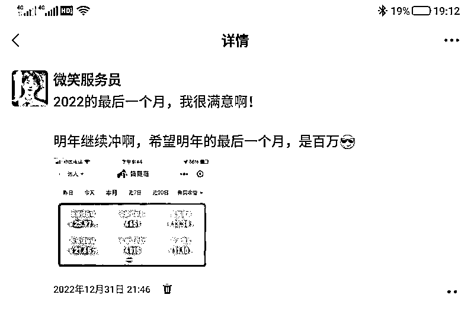
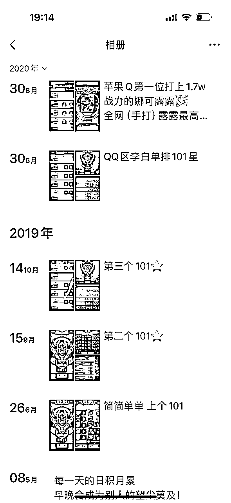
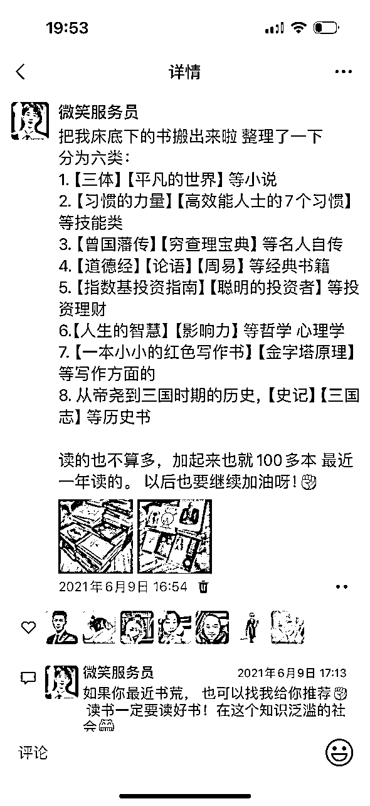
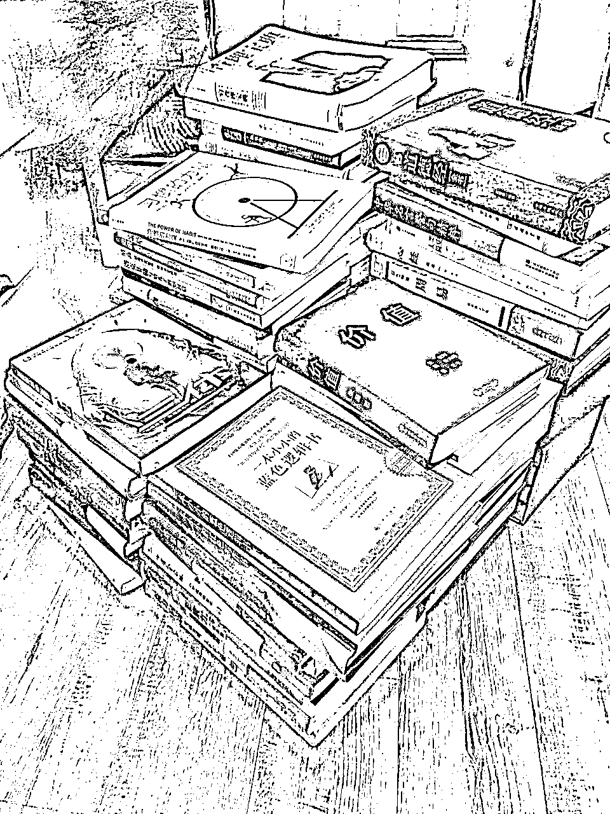
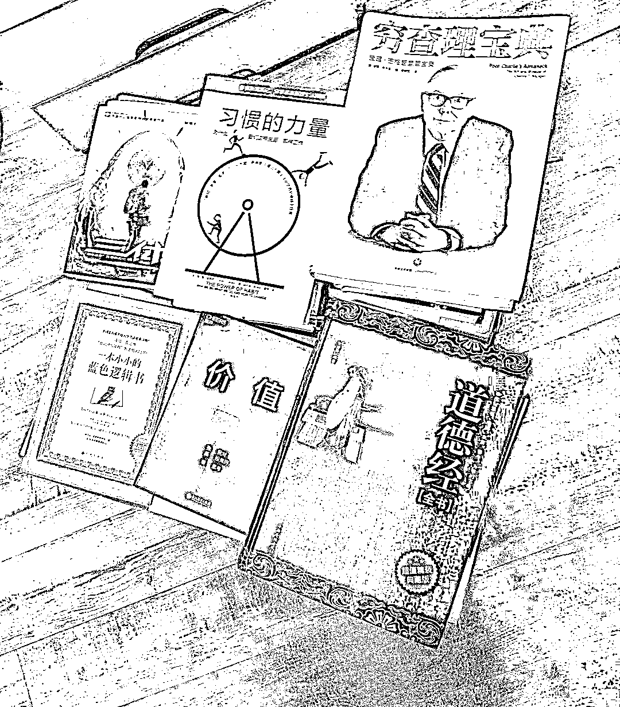
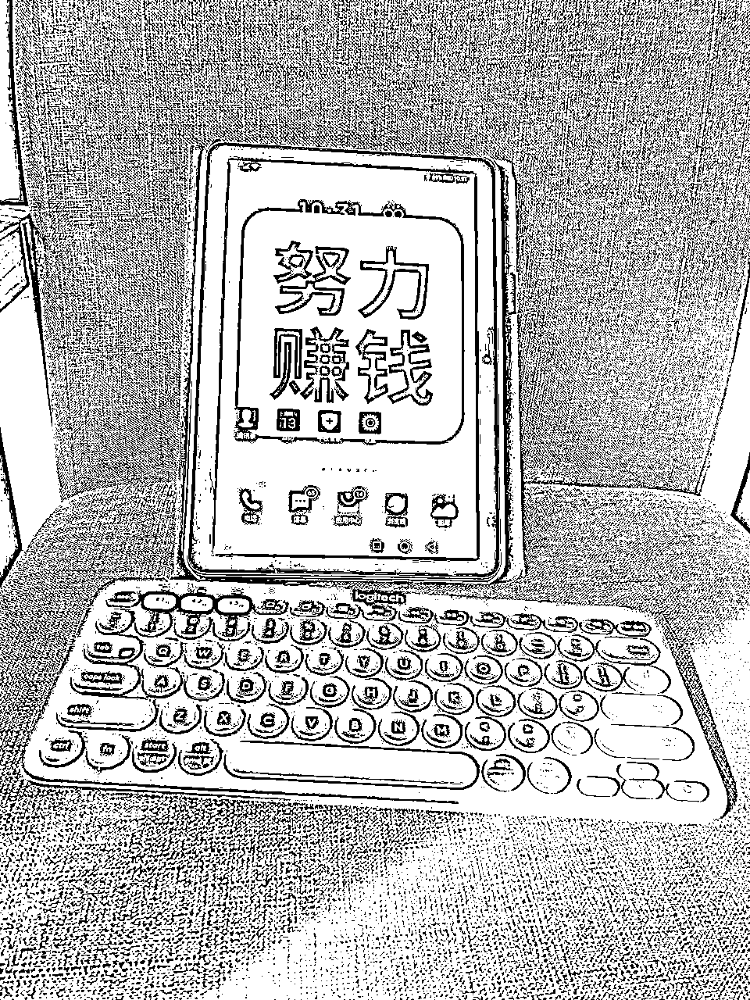
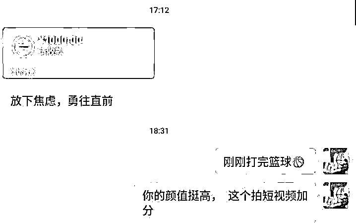
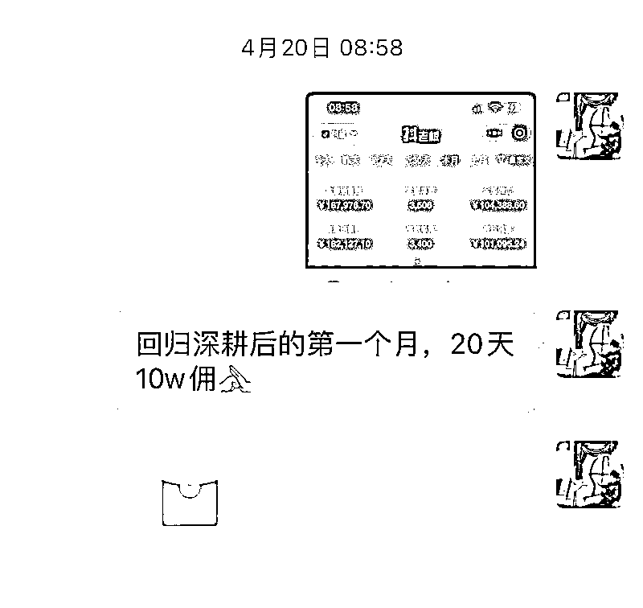
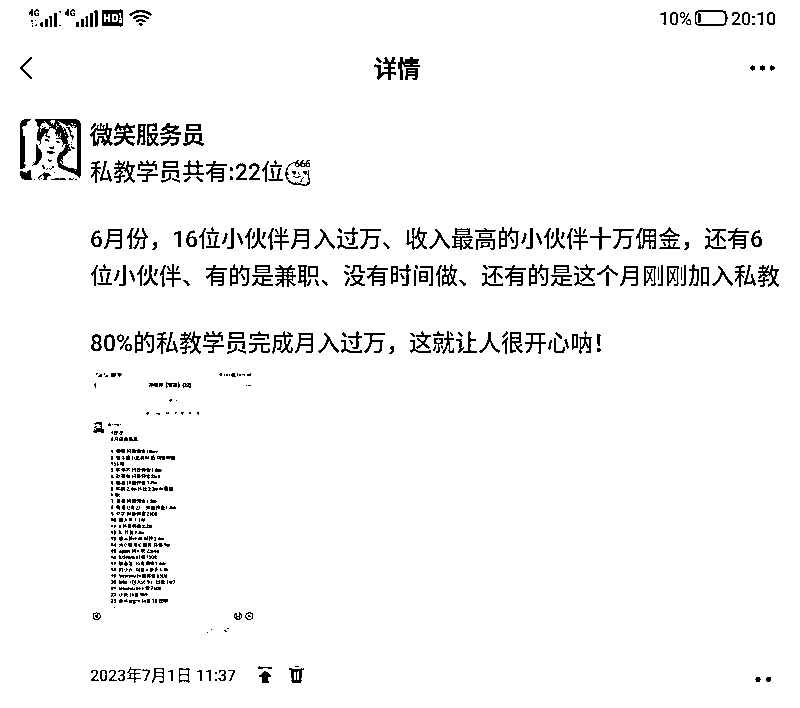
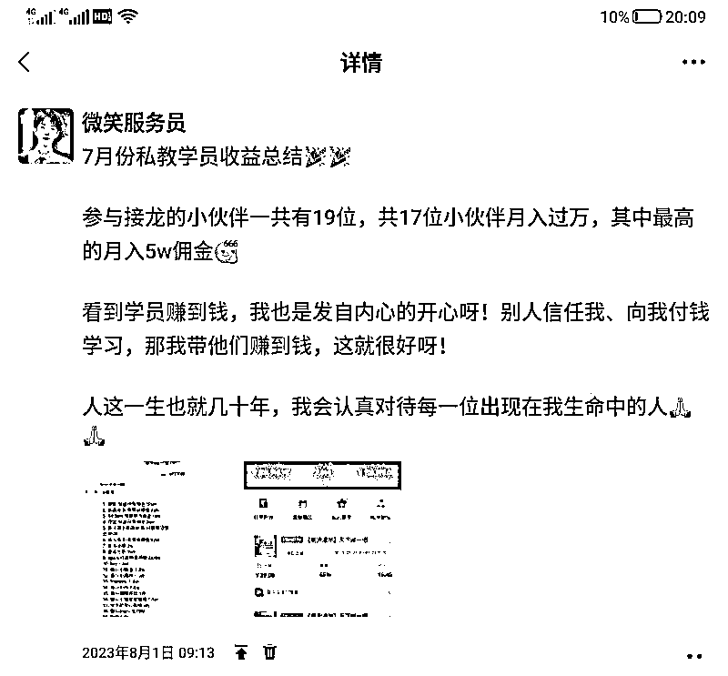

来源：https://ka8a2qs38ja.feishu.cn/docx/IiCEdRFgNoe9htxQdw6cb8xonGb
大家好，我是微笑，今天我来跟大家分享一下我是如何通过网赚项目赚到自己的第一个100w。
记得2016年我还在上初中的时候，因为家庭发生变故，我就选择了辍学打工。我送过外卖，也去小区当过保安。当保安的时候，因为晚上不能睡觉，我就打王者荣耀，天天开黑，于是我就打上了王者段位，接着我就顺理成章的成为了一名王者荣耀游戏代练。
因为代练赚到钱了，我就去做了游戏主播。做游戏主播，每天都要直播10个小时，就这样播了一年多，我的身体扛不住了，就住进了医院，吃了一年的药（每天都要吃、连续吃了一年）！
停药身体恢复健康后，我就选择做了短视频带货。因为大家都说短视频带货很火，我就去花钱学习，第一年只赚了1000块钱；第二年我个人月入十万后，就搭建了团队 ，一直到现在，大概赚了100多万。

从一个初中都没有毕业的农村孩子，到赚到人生中的第一个100w，这期间我都踩了哪些坑，做对了哪些动作呢?
看完我的成长经历后，相信会对你有所帮助。
2016年从学校出来后，我先在自家小快餐店里帮忙，洗碗、端盘子、送外卖，然后因为生意不好，加上没有营业执照干了不到一年就关店了。
之后我在朋友的推荐下，去小区当了保安。因我未满18岁，就借了一个成年人的身份证，顶着别人的身份证去上班，每个月15天白班、15天夜班。上夜班的时候还不让睡觉，于是我就每天晚上都打王者荣耀，打着打着我就上了王者段位，然后我就成为了一名王者荣耀游戏代练。我一共做了一年，每个月赚个五六千块钱，好一点的时候可以赚到七八千。
2019年游戏主播很火，于是我就趁机买了台电脑，也开启了游戏直播。当时每天都直播，主要是自己也喜欢打游戏，做到第6个月的时候，那个月我赚了3w块钱，于是就更拼了，每天直播都不低于8个小时。

一直干到2020年初，因为我太拼，每天久坐+作息不规律，身体每天都很累、很沉重。去医院检查的结果是，我得了结核性胸膜炎，然后我就住了一个月的院，还要吃一年的药（是每天都要吃、一天要吃三次、顿顿饭后吃）！
记得那个时候我真的挺无助的，曾不止一次的想要轻生。因为吃药加上不能运动，身体真的很痛、很累，当时我还没有收入来源，生活一下子就陷入到了绝望之中......
在这种窘迫的环境下，我选择的解决方案是：读书—读历史、读人文、读小说（诺贝尔文学奖的那种）、读个人成长方面的书籍。从2020年到现在，我一共读完了300多本书。在此期间，我很喜欢读名人自传，因为我发现那些历史上很牛的人，在早年时也都跟我一样，挺悲惨的，经过这么一对比，我很快就释然啦！



按照历史的规律，早年经历越悲惨，后面就越成功。
于是，让人更绝望的事情又来了，我得了干眼症……就是眼睛不能长时间看手机，哪怕看书也会感到眼睛很酸、很累。这样子我每天就不能读书、不能看手机、也不能工作，什么都干不了......
记得当时，我的内心无时无刻不在抱怨上天和命运的不公：我因为每天努力直播10个小时，住进了医院；因为每天读书，得了干眼症——这真的就让人很无语......
抱怨完了我就开始反省，为什么会这样子呢？ 为什么付出这么大的努力，我却得到这样的反馈？当然最后我也想通了，是我不懂得休息，只会盲目的努力。
太用力的人，跑不远。
从这个时候开始，我学会了休息。干眼症我找了一个老师，通过热敷+睑板腺按摩也治疗好了。同时，我还买了一个无蓝光的类墨水屏幕的平板ipad

2021年4月份左右，我停药了，身体检查也一切正常。到现在我都依然清晰的记得，我停药的那一天，那一刻就连空气都是甜的！这一年多的时间，我每时每刻都在跟死神做斗争，因为身体很痛、很累，幸运的是我微笑终于熬过来啦！
2021年10月底，我从广州回到了老家，也正式开始了我的第一次创业！
刚开始做短视频时，我想做理财方面的，因为那个时候我很喜欢巴菲特，想和巴菲特一样成为股神，后面发现不赚钱，哈哈哈......
之后，我就做了读书博主，然而，做读书博主既没有流量也赚不到钱……
我就去做了一个情感号，：29天的时间，通过口播情感内容涨了1w粉丝；然后收了一个徒弟，赚了1000元。
但是，我最后发现涨的粉丝都不能变现，就又去做了抖音测评博主，闷头干了一个月，我就出了几单，还是我自己买的样品……

从我做游戏主播以来，我这事业道路上就充满了艰辛和困苦，但是我不服气，我不信我做不起来！虽然我屡战屡败，做事情不是身体不好、就是不成功，但这反而激起了我的好强心。
皇天不负有心人，机缘巧合下，我在视频号广场上，刷到了一个叫郭晓文的直播。我看他有一个星球，叫“短视频生财宝典”，抱着试错的心态，我花了199元进了星球。
接着就到了2022年的9月份，我报名了郭晓文的养生号训练营。与此同时，我还报名了别人的训练营、还有几个课程，一起试错。
兄弟们，听完了我这倒霉蛋的几年经历，风水轮流转，也终于到了我的高光时刻啦！
2022年10月份:我赚了3000块钱！
我的天呐，我终于赚到钱了！那个时候真的很开心很开心，加入郭晓文的训练营后，通过自己的努力，我终于在互联网上月入三千啦！ 虽然收入不高，但这是一好的开始！
2022年11月份:我月入过万！
当时我每天做的就是：起号过千粉（剪辑、发布涨粉视频）→千粉后带货(每天发布带货作品)
我当时做带货作品，就是抄爆款——跟24小时以内的高赞带货作品、看榜单。
记得当时我的一条带货作品爆单了，单条带货视频让我赚了4000块钱，爆单秘诀:就是在爆单的带货视频出现时，要第一时间跟上
通过跟爆款带货视频，我成功月入过万。
2022年12月份：我月入十万！
时来运转，我微笑也终于站起来啦！当时，我是在榜单上，看见别人做无人直播医案很赚钱，我就1:1复制模仿，第一个号我就爆了，一条种草视频跑了120w的播放量，还有好几个20w、几十万的视频，这一个账号就让我赚了9w，到最后，我记得这个月赚了12w左右。
没有什么技术含量，就是第一时间跟上爆款，1:1复制，执行力拉满，我就月入十万啦，也是在这个时候，我才发现原来月入十万也就这回事，hh
月入十万后，进入2023年的1月份，我就想搭建团队放大收益。但是我既没有当过老板，也没有管理经验，更不会招人，于是我就找了两个身边的亲戚朋友：
一个是我表哥，当时他在上海打工，一个月五六千块钱；另一个是亲戚家的孩子，我们叫他小明，刚刚中专毕业。
2023年3月，他俩到齐，刚开始干活的时候，也是各种碰壁。比如他们剪辑视频不合格，我们双方对工作问题的看法不同......
表哥因为学会了从“起号千粉~带货出单”，也跑通了赚钱闭环，有一次被我因为工作问题骂了一顿，就回家单干啦……
小明呢，则喜欢讲一些没用的屁话，还总想着学会后单干，真是让我很头大……
2023年1月和2月份，我大概是赚了5~6万块钱，而到3月份，我的收入下滑到只有1w多块钱。期间我也不想干养生号了，因为总是被封号、而且我实名也不多，我就各种换项目：成人识字、小红书无货源，这些我都干过。
但最后，我听了文哥的建议，还是继续做养生号；表哥因为单干一个月就赚了500元，还是选择回来跟我继续干；小明则跟我磨合了这么久，也差不多能继续共事啦。
于是我们就开了个会，达成一致意见：以后我微笑是老大，其他所有人都要听我的；然后是，每天都要按照我的来，每天都要早睡早起、读书、运动。同时我们确定了以“无人直播为主+短视频带货为辅”的方式，就正式开始冲刺了！
4月15日，我测了一个品，叫《天下第一相书》，靠着这个品，4月份短短20多天，我就赚到了10w佣金

这也再次验证了我选爆品的能力是可以复制的！爆单的同时，我还收了私教学员，私教学员也一样出单爆单，日入几千上万！
5月份我测出爆品是《出马无师自通》
6月份的爆品是《奇门改运秘术》
7月份的爆品是《性学报告》
8月份的爆品是《图解阳宅大全》
划重点：选出爆品的方法论就是看销量爆款榜单！ 出现次数最多的品就是爆品！
4、5、6、7这四个月，我每个月光带货佣金都能赚到十几万，也带出了几十位月入过万的学员


粗略一算，从去年的12月份到今年的12月份，我带货收益赚了有70w，带货培训有30w左右，一共是100w+。
赚到一些钱后，8月份我就准备转型，做一个口播带货的mcn机构，这样子我不仅可以赚前端收益，还可以赚后端的管道收入。
测试口播带货，我是摇了三十位小伙伴跟我一起测试，起号千粉、 带货出单，跑通了一个赚钱闭环；准备放大时，我发现投产比不高，并不是每个人都能做起来，并且这次是百货类目的品，佣金都偏低。
于是我就又做了图文带货的食品饮料类目，我叫它为:美食号。经过8、9、10、11月份的测试试错，和我线下调研了两家知名培训机构，我打磨出了一套新玩法：
像前两天的X东方事件，最近还可以蹭热度、出单还是很丝滑，这种就是热点品。
功效品就是美白、失眠等这种品。出单丝滑，就是需要用账号数量来进行账号轮动，因为有概率会封号30天。
比如你定位:18~30岁这个人群，卖一些符合这个人群需求的品，比如吃的、用的，像小零食、服装、光腿神器等。
现在我是准备做自己的个人IP，目前的基本盘是团队在做抖音带货，同时也教学员做带货。最近在新增一条业务线，公域引流创业粉，目前已经跑通了，还在放大中。
就两个方向
1.带货实战
这个需要带团队稳定且持续的打磨出"爆单的成功路径"
2.公域引流获客
这个就是搞流量、导流私域卖自己的付费产品，做一个私域IP
无论是带货爆单、还是公域引流获客导流微信，底层逻辑和做出爆款的方法论都是一样的
抄爆款、找对标、1:1复制，数量取胜，术的层次就这些，这是我从游戏直播一直到现在总结出来的实战经验，
5年的互联网实战经验告诉我成功的捷径就是:复制成功。
感恩遇见生财有术
我是4月份加入生财的，今年也是我成长最快的一年，因为我在生财链接了很多实战有结果的大佬，在他们身上我学到了很多，一个人想要变得优秀，一定是加入一个优质的圈子。
感谢梁靠谱小姐姐
她看待问题总是直击本质，三言两语就能讲清楚问题的核心，与她交流时，她就像一个小太阳，不仅为我答疑解惑，还能让我能量满满，哈哈。
最后:感谢我的好大哥——郭晓文！